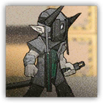
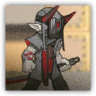

萨卡兹刀兵 Sarkaz Swordsman
近战 物理；普通 萨卡兹
|  |
萨卡兹雇佣兵。长年累月的战争使他们伤痕累累，如今依旧为了完成雇主的命令而不断征战。 |
萨卡兹刀兵丨Sarkaz Swordsman
中型类人（萨卡兹），混乱中立
AC 12
先攻 +3（13）
HP 32（5d8+10）
速度 30 尺
| 调整 | 豁免 | ||
|---|---|---|---|
| 力量 | 16 | +3 | +3 |
| 智力 | 9 | -1 | -1 |
| 调整 | 豁免 | ||
|---|---|---|---|
| 敏捷 | 12 | +1 | +1 |
| 感知 | 12 | +1 | +1 |
| 调整 | 豁免 | ||
|---|---|---|---|
| 体质 | 14 | +2 | +2 |
| 魅力 | 8 | -1 | -1 |
技能 运动+5，察觉+3，威吓+1
抗性 毒素
装备 长剑，皮甲
感官 黑暗视觉60尺，被动察觉13
语言 通用语，萨卡兹语
CR 1（XP 200；PB +2）
特质 Traits
魔法抗性 Magic Resistence。萨卡兹为抵抗法术和其它魔法效应而作的豁免检定具有优势。
集群战术 Pack Tactics。若萨卡兹刀兵的攻击目标生物周围5尺范围内存在有至少一个未失能的盟友，则萨卡兹刀兵对该生物进行的攻击检定具有优势。
动作 Actions
长刀 Longsword。近战攻击检定：+5，触及5尺。命中：8（1d10+3）挥砍伤害。
萨卡兹刀术师 Sarkaz Blademaster
近战 物理；普通 萨卡兹
|  |
萨卡兹雇佣兵。比一般的刀兵更加技艺精湛。长年累月的战争使他们伤痕累累，如今依旧为了完成雇主的命令而不断征战。 |
萨卡兹刀术师丨Sarkaz Blademaster
中型类人（萨卡兹），混乱中立
AC 13
先攻 +3（13）
HP 45（7d8+14）
速度 30 尺
| 调整 | 豁免 | ||
|---|---|---|---|
| 力量 | 16 | +3 | +3 |
| 智力 | 11 | +0 | +0 |
| 调整 | 豁免 | ||
|---|---|---|---|
| 敏捷 | 13 | +1 | +1 |
| 感知 | 13 | +1 | +1 |
| 调整 | 豁免 | ||
|---|---|---|---|
| 体质 | 14 | +2 | +2 |
| 魅力 | 9 | -1 | -1 |
技能 运动+5，察觉+3，威吓+1
抗性 毒素
装备 长剑，镶钉皮甲
感官 黑暗视觉60尺，被动察觉13
语言 通用语，萨卡兹语
CR 2（XP 450；PB +2）
特质 Traits
魔法抗性 Magic Resistence。萨卡兹为抵抗法术和其它魔法效应而作的豁免检定具有优势。
集群战术 Pack Tactics。若萨卡兹刀兵的攻击目标生物周围5尺范围内存在有至少一个未失能的盟友，则萨卡兹刀兵对该生物进行的攻击检定具有优势。
动作 Actions
多重攻击 Multiattack。萨卡兹刀术师发动两次长刀攻击。
长刀 Longsword。近战攻击检定：+5，触及5尺。命中：8（1d10+3）挥砍伤害。重击：直到萨卡兹刀术师下回合开始前，目标下次攻击检定将具有劣势。